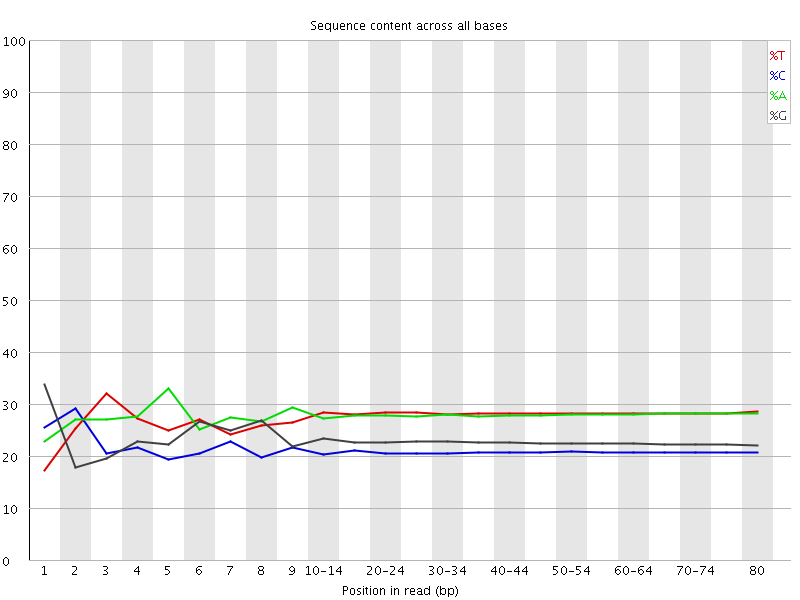

![[OK]](Icons/tick.png) Basic Statistics
Basic Statistics
| Measure | Value |
|---|---|
| Filename | RA032_R1.fq.gz |
| File type | Conventional base calls |
| Encoding | Sanger / Illumina 1.9 |
| Total Sequences | 8256565 |
| Filtered Sequences | 0 |
| Sequence length | 80 |
| %GC | 43 |
Per base sequence quality
Per sequence quality scores
![[WARN]](Icons/warning.png) Per base sequence content
Per base sequence content

![[FAIL]](Icons/error.png) Per base GC content
Per base GC content
Per sequence GC content
Per base N content

Sequence Length Distribution

Sequence Duplication Levels
Overrepresented sequences
| Sequence | Count | Percentage | Possible Source |
|---|---|---|---|
| GGGGGGGGGGGGGGGGGGGGGGGGGGGGGGGGGGGGGGGGGGGGGGGGGG | 91015 | 1.1023349298406784 | No Hit |
| AGGGGGGGGGGGGGGGGGGGGGGGGGGGGGGGGGGGGGGGGGGGGGGGGG | 8362 | 0.1012769838304428 | No Hit |
Kmer Content
| Sequence | Count | Obs/Exp Overall | Obs/Exp Max | Max Obs/Exp Position |
|---|---|---|---|---|
| GGGGG | 11633750 | 29.54547 | 36.766045 | 7 |
| CCCTC | 3076400 | 8.936894 | 14.666866 | 15-19 |
| CCTCA | 3655110 | 7.9767036 | 54.365566 | 1 |
| CTCAG | 3813910 | 7.6443086 | 50.16096 | 2 |
| TCAGC | 3593925 | 7.2033873 | 48.92642 | 3 |
| CTGAG | 3851460 | 7.089864 | 34.83892 | 9 |
| GAGGG | 3353575 | 6.966484 | 34.39467 | 4 |
| GCTGA | 3686890 | 6.786919 | 34.555683 | 8 |
| TCCCT | 2932835 | 6.368365 | 10.16298 | 15-19 |
| CAGCT | 3076895 | 6.167093 | 11.753822 | 4 |
| TGAGG | 3641680 | 6.156856 | 28.287357 | 3 |
| ATCCC | 2719120 | 5.9340525 | 29.506918 | 9 |
| AGGGA | 3420840 | 5.812631 | 28.13813 | 5 |
| AGCTG | 3103410 | 5.7128344 | 6.607105 | 40-44 |
| GATCC | 2586290 | 5.1837616 | 26.782436 | 8 |
| GGGAT | 2903330 | 4.9085546 | 23.195585 | 6 |
| GGATC | 2620415 | 4.823725 | 24.727785 | 7 |
| TTTTT | 4214745 | 3.8220887 | 4.5090704 | 2 |
| AAAAA | 4099410 | 3.8121028 | 4.288108 | 75-76 |
| CCCAG | 1063100 | 2.8506603 | 5.200395 | 1 |
| CAGCC | 898985 | 2.4105926 | 5.54139 | 3 |
| GCCTC | 811505 | 2.1651094 | 5.196623 | 1 |
| CAGCG | 826005 | 2.034224 | 42.993893 | 4 |
| GCCTG | 800870 | 1.9624355 | 5.1692824 | 1 |
| CGCTG | 792500 | 1.9419258 | 42.47114 | 7 |
| AGCGC | 770810 | 1.8982939 | 42.616867 | 5 |
| GCGCT | 758840 | 1.8594458 | 42.408802 | 6 |
| ACCCT | 760210 | 1.6590389 | 6.61402 | 9 |
| GACCC | 598275 | 1.6042507 | 7.655059 | 8 |
| GGGAC | 667970 | 1.5108377 | 6.610054 | 6 |
| GGACC | 562430 | 1.385111 | 6.970739 | 7 |
| AGGGG | 518145 | 1.0763584 | 5.740479 | 1 |